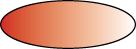

Lección: Trabajando con la Geometría
Trazado y Rellenado de Primitivas Graficas
Ya sabes cómo crear diferentes primitivas geométricas y formas más complicadas. Esta lección enseña cómo agregar color y contornos elegantes a sus gráficos y representa el relleno y el trazo:
- Relleno – es un proceso de pintado del interior de la forma con un color sólido o un gradiente de color, o un patrón de textura
- Trazado – es un proceso de dibujar el contorno de una forma aplicando un ancho de trazo, un estilo de línea, y un atributo de color
Para aplicar estilos de línea elegantes y patrones de relleno a primitivas geométricas, cambie los atributos de
trazo y pintura en el contexto de
Graphics2D
antes de la presentación. Por ejemplo, dibuje una línea discontinua creando un apropiado objeto
Stroke. Para agregar este trazo al contexto Graphics2D antes de presentar la
línea llame al método setStroke. Del mismo modo, aplica un relleno de gradiente a un objeto
Shape creando un objeto GradientPaint y agregarlo al contexto
Graphics2D.
Las siguientes líneas de código enriquecen las primitivas geométricas con contexto de relleno y trazo:
// dibuja RoundRectangle2D.Double
final static float dash1[] = {10.0f};
final static BasicStroke dashed =
new BasicStroke(1.0f,
BasicStroke.CAP_BUTT,
BasicStroke.JOIN_MITER,
10.0f, dash1, 0.0f);
g2.setStroke(dashed);
g2.draw(new RoundRectangle2D.Double(x, y,
rectWidth,
rectHeight,
10, 10));

// rellena Ellipse2D.Double
redtowhite = new GradientPaint(0,0,color.RED,100, 0,color.WHITE);
g2.setPaint(redtowhite);
g2.fill (new Ellipse2D.Double(0, 0, 100, 50));

El código de ejemplo
ShapesDemo2D.java representa implementaciones adicionales de trazado y relleno.
Definición de Estilos de Línea Elegantes y Patrones de Relleno
Usando las clases de Java 2D Stroke y Paint, puede definir estilos de línea elegantes
y patrones de relleno.
Estilos de Línea
Los estilos de línea se definen por el atributo de traza en el contexto de renderizado Graphics2D.
Para establecer el atributo de traza, cree un objeto BasicStroke y páselo al método
setStroke de Graphics2D.
Un objeto BasicStroke contiene onformación sobre el ancho de la línea, estilo de unión, estilo de
los extremos, y estilo del guión. Esta información se usa cuando una Shape se representa con el
método draw.
El ancho de línea es el grosor de la línea medido de forma perpendicular a su trayectoria. El ancho de
línea se especifica como un valor float en unidades de coordenada del usuario, que son
aproximadamente equivalentes a 1/72 de pulgada cuando se usa la transformación predeterminada.
El estilo de unión es la decoración que se aplica donde dos segmentos de línea se juntan.
BasicStroke admite los siguientes tres estilos de unión:
JOIN_BEVEL

JOIN_MITER
JOIN_ROUND
El estilo de los extremos es la decoración que se aplica donde un segmento de línea termina.
BasicStroke admite los tres estilos de extremo siguientes:
CAP_BUTT

CAP_ROUND
CAP_SQUARE
El estilo de guión define el patrón de las secciones opacas y transparentes aplicadas a lo largo de la longutud de la línea. El estilo de guión se define por una matriz de guiones y una fase de guión. La matriz de guiones define el patrón de guiones. Los elementos alternantes en la matriz representan la longitud del guión y la longitud del espacio entre guiones en unidades de coordenadas del usuario. La fase de guión indica qué parte del patrón de guión se aplica al principio de la línea.
Patrones de Relleno
Los patrones de relleno se definen por el atributo de pintado en el contexto de renderizado
Graphics2D. Para establecer el atributo de pintado, crea una instancia de un objeto que implementa
la interfaz Paint y se lo pasa al método setPaint de Graphics2D.
Las tres clases siguientes implementan la interfaz Paint: Color,
GradientPaint, y TexturePaint.
Para crear un GradientPaint, especifique una posición de inicio y color y una posición final y
color. El gradiente cambia proporcionalmente de un color al otro a lo largo de la línea que conecta las dos
posiciones. Por ejemplo:

El patrón para una clase TexturePaint se define por una clase BufferedImage. Para
crear un objeto TexturePaint, especifique la imagen que contiene el patrón y un rectángulo que se
usa para replicar y anclar el patrón. La imagen siguiente representa esta característica: